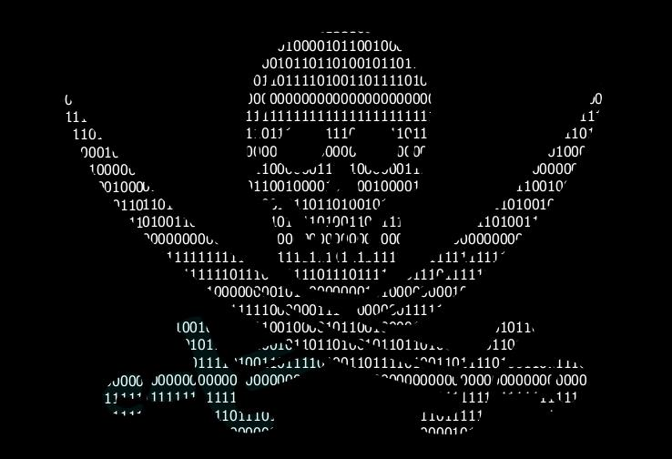
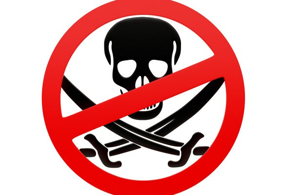

A $46 billion annual problem that the entertainment industry has been losing for three decades — the history, mechanics, and contested ethics of digital copyright infringement, and the hidden danger lurking inside every cracked software download.
“Information wants to be free. Information also wants to be expensive. That tension will not go away.”
Stewart Brand, 1984 — the line that launched a thousand argumentsOnline piracy — the unauthorised reproduction, distribution, and consumption of copyrighted material via the internet — is one of the oldest, most debated, and most persistent categories of internet crime. Unlike the drug trade or NCII, its victims are primarily corporations and industry bodies rather than individuals, and its perpetrators include hundreds of millions of ordinary internet users who do not consider themselves criminals in any meaningful sense.
This moral complexity does not eliminate the legal reality: copyright infringement at scale costs measurable economic harm, displaces legitimate revenue, and funds organised criminal networks (particularly in the illegal IPTV sector). It also, paradoxically, demonstrates real market failures — geo-blocking, pricing inequality, and release window delays that the entertainment industry has been slow to address.
But piracy also carries a danger most casual users completely underestimate: the malware embedded in cracked software downloads. This is not an edge case. It is a primary infection vector for ransomware, spyware, and credential-stealing trojans affecting millions of machines annually.
This report examines all of it: the methods, the scale, the ecosystem of organised piracy, the criminal infrastructure around it, the landmark legal cases, and the ongoing debate about access, pricing, and the internet’s relationship with intellectual property.
Digital piracy is not a single activity. It is a layered ecosystem of methods ranging from individual peer-to-peer file sharing to highly organised criminal distribution networks — each with distinct legal, technical, and economic characteristics.
BitTorrent is a decentralised file transfer protocol where users download pieces of a file from multiple sources simultaneously while also uploading pieces they have. It is also the primary method by which pirated films, music, software, and games are distributed. The Pirate Bay, founded in 2003 in Sweden, became the world’s most visited torrent index site. Its founders were convicted and sentenced to prison in 2009 — but the site continued operating for years, and numerous successor sites remain active. BitTorrent traffic is visible to ISPs and copyright enforcement agencies, making it a legally risky method.
67B+ annual visits to torrent sitesInternet Protocol Television piracy involves subscription services that provide live television, film, and sports content through illegally obtained streams. Illegal IPTV has become the dominant form of piracy in Europe and has significant organised crime involvement. Operations resell access to stolen broadcast streams at low monthly rates, undercutting legitimate services.
Major organised crime involvementThe ‘Scene’ is a semi-underground network of release groups that crack, encode, and distribute pirated content — films, software, games — via private FTP servers, often hours before legitimate release. Scene groups operate under strict internal rules, use pseudonyms, and form a hierarchical reputation economy.
Organised release networkDirect download sites host pirated content on centralised servers. The 2012 Megaupload seizure was one of the most significant anti-piracy operations in history, arresting founder Kim Dotcom in New Zealand. Legal proceedings continued for over a decade. Users download directly rather than peer-to-peer, providing less legal exposure than BitTorrent.
Centralised — faster, lower exposureAs legitimate streaming services have proliferated, so have pirate streaming sites embedding content in browser-based players. Sites like 123Movies served hundreds of millions of visitors. The proliferation of multiple paid services (Netflix, Disney+, HBO Max, Apple TV+) has directly correlated with rising streaming piracy — many users cite cost and fragmentation as their primary motivation.
Fastest-growing piracy categoryCasual piracy — a student downloading a film — is legally and operationally distinct from the organised distribution networks that supply pirated content at scale. Understanding the latter is essential to understanding enforcement.
At the top of the supply chain sit the release groups — the Scene. These are small, geographically distributed groups of specialists: encoders who compress film and audio; crackers who defeat software copy-protection (DRM); NFO writers who produce documentation; and couriers who distribute to private FTP servers.
From private FTP servers, releases move to semi-public pre-databases, then to public torrent indexing sites and DDL portals. A major film can move from cinema screen to global public availability within hours of release via camrip, screener leak, or compressed digital file.
The illegal IPTV sector operates differently: operators steal broadcast streams using satellite receivers, restream them via server infrastructure, and sell monthly subscriptions via reseller networks. Some operations generate millions of euros annually before seizure.
Payment processing is a persistent challenge for piracy operations — banks and card networks have been pressured to refuse processing for known piracy sites. Many resort to cryptocurrency, PayPal alternatives, or cash-based reseller networks.

For most casual users, online piracy feels like a victimless shortcut. The reality of pirated software downloads is considerably darker. Research consistently finds that a majority of pirated software packages contain malicious code — not as a fringe occurrence, but as standard practice among criminal groups that operate counterfeit distribution sites.
The mechanism is straightforward: a user searches for a cracked version of a commercial application, downloads it from a piracy portal or torrent, and the payload installs silently alongside the promised software. The user sees the application launch normally. The malware is already running.
Common malware types include: credential stealers harvesting saved passwords and banking logins; cryptominers using the victim’s CPU/GPU; ransomware droppers staging later deployments sometimes weeks after infection; and remote access trojans (RATs) giving attackers persistent control.
This makes pirated software a significant threat not just to individuals but to organisations. Employees who install pirated software on work devices — or personal machines that connect to corporate networks — create entry points for attacks that may have nothing to do with the piracy itself.
Common malware payloads in pirated software
Measuring piracy’s economic impact is contested — industry figures tend toward maximalism, while independent researchers often find significantly lower real-world displacement effects.
Most pirated content categories (by volume)
User-cited motivations for piracy
Legal battles over online piracy have defined the boundaries of internet law, platform liability, and copyright enforcement for three decades — producing some of the most consequential rulings in digital legal history.
Napster’s peer-to-peer music sharing service launched in 1999 and reached 80 million registered users within two years. The RIAA sued under the DMCA. Judge Marilyn Patel ruled that Napster had materially contributed to infringement and ordered it to prevent sharing of copyrighted material — an impossible technical requirement. Napster shut down in 2001. The case established contributory and vicarious infringement liability for P2P platforms and triggered a decade of industry legal action against individual file sharers.
The four founders of The Pirate Bay were convicted of assisting copyright infringement and sentenced to one year in prison each, plus 30 million Swedish kronor in damages. The verdict was upheld and sentences increased on appeal. The case drew global attention to BitTorrent indexing liability and made the defendants folk heroes within internet freedom communities. The Pirate Bay continued operating through numerous domain changes for over a decade after conviction.
The FBI coordinated with New Zealand police to arrest Kim Dotcom at his Auckland mansion in January 2012, simultaneously seizing Megaupload’s servers — a platform hosting 50 petabytes of data for 150 million registered users. The US DOJ alleged $500 million in infringement losses. The case became one of the longest-running extradition battles in internet history. As of 2024, proceedings were still ongoing. Dotcom launched Mega as a successor service operating legally with end-to-end encryption.
The EU’s Copyright in the Digital Single Market Directive required large online platforms to implement upload filters to prevent users posting copyrighted material. The provision was deeply controversial, with critics arguing it would require automated censorship of all user-uploaded content. YouTube, Wikipedia, and major internet freedom organisations campaigned against it. Passed in 2019, its implementation across member states has been uneven, and its long-term impact remains contested.
The most contested copyright battleground of 2024 is the use of copyrighted works to train AI systems without licence or compensation. Multiple lawsuits have been filed against OpenAI, Stability AI, Google, and others by authors, artists, and publishers. The outcomes will likely redefine intellectual property law for the digital age — potentially dwarfing the impact of any previous piracy case.
Anti-piracy enforcement has evolved significantly from the early RIAA strategy of suing individual file sharers — widely considered a public relations disaster — toward technical blocking, platform cooperation, and the insight that the most effective anti-piracy tool is a competitively priced legitimate service.

The DMCA’s notice-and-takedown provision requires platforms to remove infringing content upon receiving a valid copyright complaint. Rights holders now send millions of takedown notices monthly — Google processes over 5 million per week — but the volume of infringing content means takedowns function more as suppression than eradication. Content is typically re-uploaded within hours.
Mixed EffectivenessIn the UK, EU, and Australia, rights holders have obtained court orders requiring ISPs to block access to known piracy sites. The Premier League has been particularly effective, securing real-time blocking injunctions during live broadcasts. However, users bypass site blocks trivially using VPNs or by accessing mirror sites — technically sophisticated users are barely inconvenienced.
Limited Against VPN UsersThe most effective anti-piracy intervention in music and video has not been enforcement — it has been competitively priced, convenient legal alternatives. Music piracy dropped dramatically following Spotify’s growth. Netflix’s expansion correlated with significant reductions in TV and film piracy. This is the most empirically supported finding in piracy research: availability and price are the dominant drivers of piracy rates.
Most Effective StrategyThe proliferation of streaming services has ironically driven a piracy rebound. Research by MUSO found global piracy increased significantly in 2022–2023, directly correlated with the fragmentation of streaming catalogues across incompatible, individually priced services. Geo-blocking frustration has historically driven piracy — and fragmentation recreates it.
Growing ProblemOnline piracy generates a genuine ethical debate that is distinct from its legal status. The economics of digital content distribution create real access inequities that the industry has been slow to address — and that no honest analysis of piracy can ignore.
Test your knowledge on piracy and all other internet crime topics — 10 randomised questions, no time limit.
Take the Quiz →